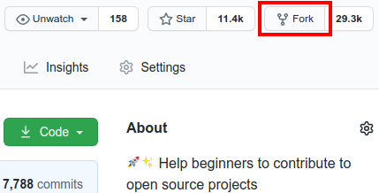
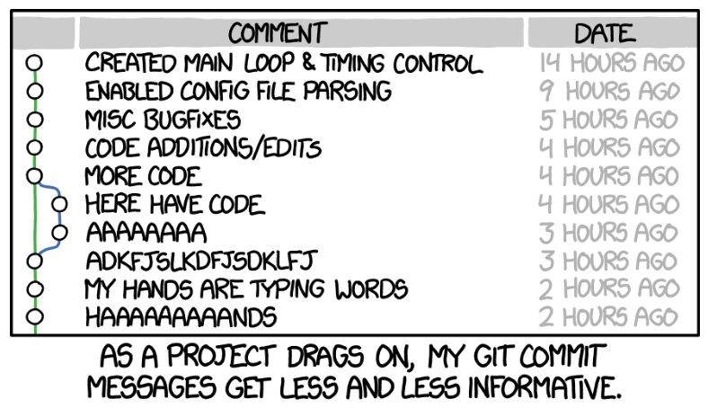

Als erstes muss git installiert werden. Dafür müssen die Download-Files von https://git-scm.com/download/win heruntergeladen werden. Dieser Link führt zum Download für die Windows Version von git.
Um nun git zu installieren muss man die gerade heruntergeladene .exe Datei ausführen. Nun erscheint ein Dialogfenster, das Optionen zur Installation von git enthält. Die Voreinstellungen passen so wie sie sind, d.h. es kann einfach durch geklickt werden.
Au√üerdem braucht man einen Code-Editor. Im folgenden wird Visual Studio Code genutzt. In diesem Tutorial ist leider keine Zeit f√ºr eine vollst√§ndige Einf√ºhrung in VS-Code. Hier ist ein Video, das trotzdem n√ºtzlich sein k√∂nnte üòâ https://www.youtube.com/watch?v=r5jNl-IOSZg
Um mit git Repositories/Projekte zu verwalten braucht man Repositories. Hierfür muss ein gitHub oder gitLab Account erstellt werden. Beide Websites funktionieren gut. GitHub ist jedoch die größere Plattform, deshalb gibt es dort mehr Projekt von Anderen.
Für die Registrierung bitte diesem Link folgen: https://github.com (Nutzerdaten merken!!!)
Um das git des Computers mit gitHub zu verbinden, muss die .gitconfig-Datei bearbeitet werden. Dies geschiet mit dem Befehl git config.
# Befehl zum setzten des Nutzernamen
$ global git config --user.name hanshuber
# Befehl zum setzen der E-Mail
$ git config --global user.email hans.huber@gmail.com
Die ersten Schritte sind geschafft üòÅ git ist jetzt berteit f√ºr das erste Projekt. Aber welche Befehle werden wie eingesetzt? Das kommt im folgenden Abschnitt.
Um die Grundlegenden Begriffe und Befehle zu lernen, kann man an einem Projekt namens first-contributions teilnehmen. Hier werden die Grundlagen vermittelt, die das Zusammenarbeiten von Programmierern aus der ganzen Welt ermöglichen.
Der Link für dieses Projekt lautet: https://github.com/firstcontributions/first-contributions/tree/main
Als erstes muss man das Repository "forken", damit Änderungen daran vorgenommen werden können. Hierzu muss auf den Button namens Fork geklickt werden.

Als nächstes auf Create Fork klicken (alle anderen Einstellungen passen so wie sie sind). Dies sollte nun eine Kopie des Repositorys im persöhnlichen Account erstellen.
Jetzt wird das vorher "geforkte" Repository auf den Computer geklont. Dazu öffnet man das Repository in seinem Account und klickt auf den Button "Code".

Nun öffnet sich ein Fenster mit einer URL. Diese muss kopiert werden.

Um das Repositroy zu klonen gibt man jetzt den Befehl git clone gefolgt von der gerade kopierten URL.
Dieser Befehl muss in Commandline oder Cmd eingegeben werden (Cmd öffnet sich in VS-Code mit Strg + Ö)
# git clone "URL für Repository"
$ git clone https://github.com/firstcontributions/first-contributions.git
Bei der Verwendung von git erstellt man für jedes neue Feature einen Branch, den man danach wieder in den Branch main einbettet.
Um einen Branch zu erstellen wird der Befehl git switch verwendet. Jedoch muss man sich dafür mit der Commandline innerhalb des Repositorys befinden.
# cd "Ordner wohin man möchte"
$ cd first-contributions
Hans befindet sich im richtigen Ordner, da der Pfad den Namen seines Repositroys enthält.
C:\Users\hans\Dokumente\first-contributions>
Um einen Branch zu erstellen benötigt man einen sinnvollen Namen. Dieser sollte das Feature beschreiben, das man umsetzen will.
# git switch -c "Branchname"
$ git switch -c added_Hans_Peter
Das "-c" steht hierfür "create". Das heißt, falls man zwischen mehreren Branches wechseln will, ohne einen neuen zu erstellen, lässt man "-c" weg.
Um zu sehen in welchem Branch man sich befindet, nutzt man den Befehl git branch. Hierbei gibt es auch die Optionen -r oder -a (-r zeigt remote Repositories und -a zeigt lokale & remote Repositories)
$ git branch
* added_Hans_Peter
master
Super! Jetzt darf man seinen Namen in die Datei Contributers.md schreiben üòé
Zum Speichern der Änderungen reicht Strg + S allein leider nicht. Man benötigt drei Schritte.
$ git status
Changes not staged for commit:
(use "git add/rm ..." to update what will be committed)
(use "git restore ..." to discard changes in working directory)
modified: Contributors.md
# git add "Dateiname"
$ git add Contributors.md
3- Nun müssen diese Änderungen abgegeben/commited werden. Hierzu wird der Befehl git commit verwendet. Jeder commit muss eine Commit-Message enthalten. Diese wird mit -m hinzugefügt und beschreibt was seit dem letzten commit geändert wurde.
# git commit -m "Commit-Message"
$ git commit -m "Add Hans to Contributors list"

Alle Änderungen, die bis jetzt vorgenommen wurden, waren local. Um nun das Projekt online zu sichern muss es auf gitHub hochgeladen/gepusht werden. Dafür wird der Befehl git push verwendet.
# git push origin "Branchname"
$ git push origin added_Hans_Peter
Origin beschreibt hier, dass der Branch zu einem Online-Repository gehört.
Jetzt, da alle Änderungen vorgenommen wurden, kann das Projekt wieder in das Orginal-Projekt integriert werden. Hierzu navigiert man auf gitHub zurück zu seinem Projekt und erstellt eine sogenannte pull request.

Nun öffnet sich ein Fenster indem man den Namen seiner pull request und einen Kommentar eingibt. Beides sollte definieren was mit dieser pull request erreichent werden soll.

Der Verwalter des Original-Projekts muss nun die pull request annehmen. Nachdem er diese annimmt wird der Text, den man vorhin eingetragen hat, in Contributors.md angezeigt.
Das erste Projekt ist nun geschafft üòä
In VS-Code kann man auch ohne Cmd Änderungen adden, commiten und pushen. Im Fenster Source Control wird mit dem Plus-Symbol sozusagen der Befehl git add ausgeführt. Mit dem Commit-Button können dann alle so hinzugefügten Änderungen commited werden. Nachdem alles so gespeichert wurde kann mit Sync all Changes das Online-Repository auf den neusten Stand gebracht werden.
Die Wiederherstellung einer früheren Version des Projekts kann ganz einfach mit der Erweiterung gitLense für VS-Code erreicht werden.
Nach der Installation sollte ein neues Icon in der rechten Leiste erscheinen, welches bei klick ein neues Fenster in der rechten Spalte öffnet. Hier kann man den Reiter Commit-Graph wählen, welches wieder ein Fenster aufmacht in dem alle Commits gezeigt werden. Nun wählt man lediglich den Commit, den man betrachten möchte, aus und klickt auf die drei Punkte. In einem neu geöffneten Fenster wählt man Switch to Commit um mit dem HEAD (der Stand der in VS-Code angezeigt wird) in diesen Commit zu wechseln.

Um nun das Projekt auf diesen Stand zurück zusetzten, wählt man wieder die drei Punkte, aber jetzt anstelle von Switch to Commit Rebase to Commit. Dies setzt den aktuellen Branch auf den Stand dieses Commits.

Um VS-Code als diff-Tool zu verwenden muss man die .gitconfig Datei bearbeiten.
# Befehl um .gitconfig aufzurufen
$ git config --global -e
Dazu müssen in diese Datei folgende Zeilen Code hinzugefügt werden:
[diff]
tool = vscode
[difftool "vscode"]
cmd = code --wait --diff $LOCAL $REMOTE
[merge]
tool = vscode
[mergetool "vscode"]
cmd = code --wait $MERGED
Jetzt kann man zwei Branches mergen in dem man mit git switch zu dem Branch navigiert, in den der andere Branch hinein gemerged werden soll. Als nächstes kann mit Strg + Shift + P nach dem Command "Git: Merge Branch" suchen. Nun muss lediglich der zweite Branch ausgewählt werden..
Falls während einem Merge Widersprüche auftreten, können diese nun mit dem in VS-Code eingebauten diff-Tool gelöst werden. Mit diesem Tool kann gewählt werden, welche Version des Codes verwendet werden soll.
Mit einer .gitignore Datei können bestimmte Datein ausgewählt werden, die git nicht tracken soll und somit auch nicht bei Commits hochladen soll. Dies sind Dateien, die nicht für die Öffentlichkeit bestimmt sind und auch nicht auf gitHub landen sollten. Ein Beispiel für solche Datein wären Dateien, die SSH-Keys (sind für jede Person unteschiedlich) enthalten.
Ein Beispiel für eine .gitignore Datei wäre:
# Logs
logs
*.log
npm-debug.log*
yarn-debug.log*
yarn-error.log*
pnpm-debug.log*
lerna-debug.log*lerna-debug.log*
node_modules
dist
dist-ssr
*.local
# Editor directories and files
.vscode/*
!.vscode/extensions.json
.idea
.DS_Store
*.suo
*.ntvs*
*.njsproj
*.sln
*.sw?